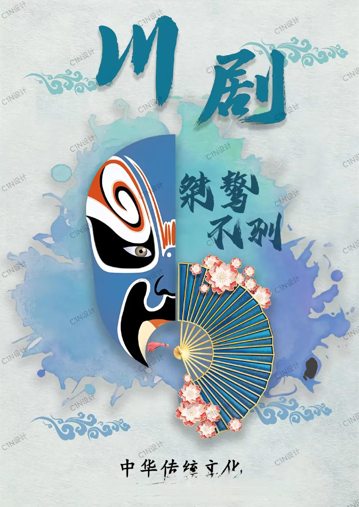
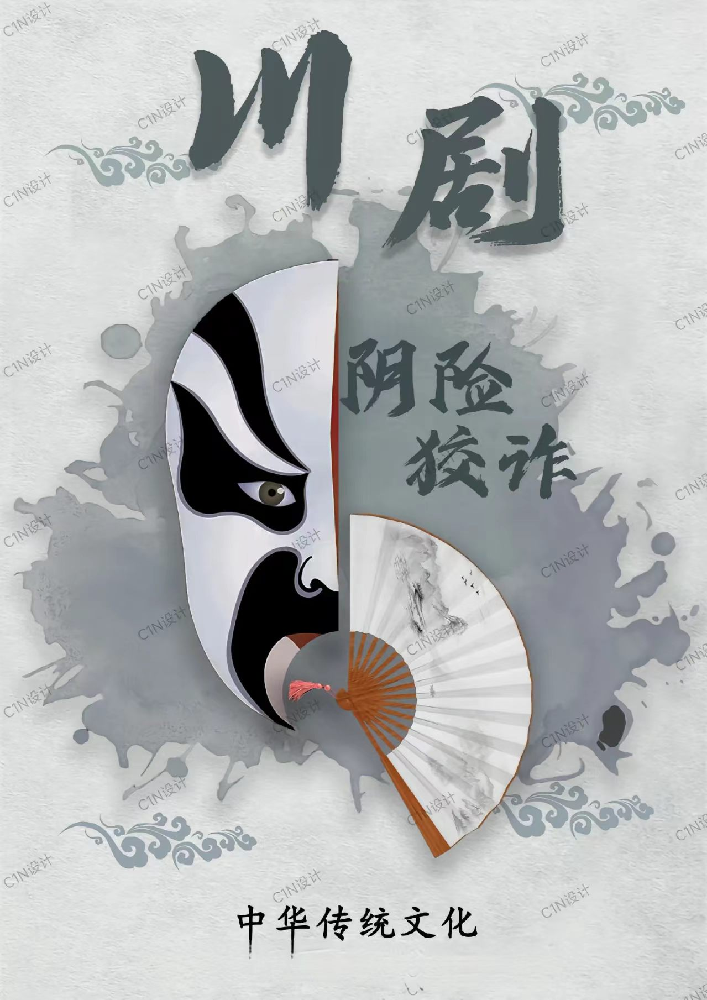
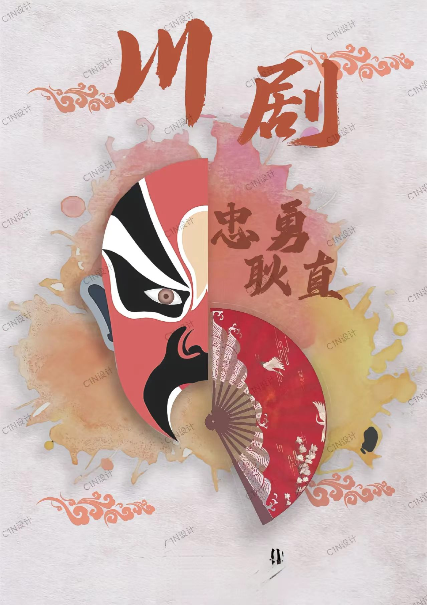
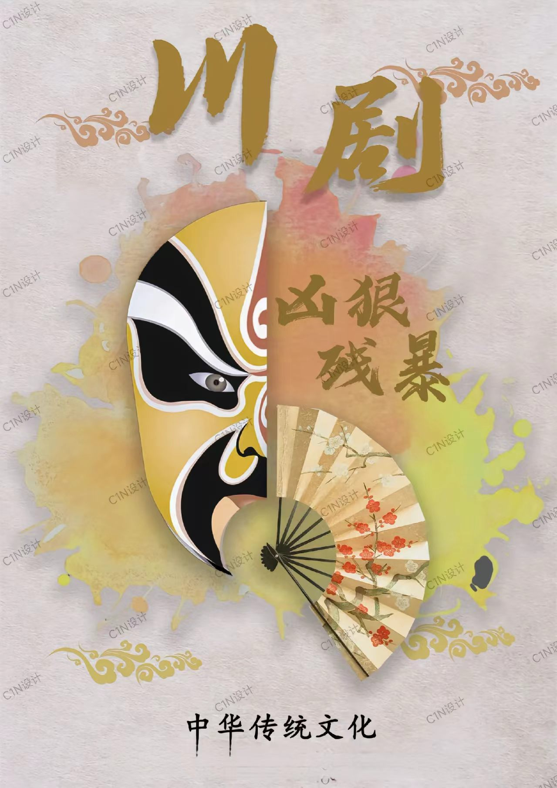

📸 主图介绍
经典京剧净角成套脸谱彩绘作品，依托五色定型古法，以红、白、黑、蓝、金区分人物忠奸善恶、身份品性，线条夸张浓烈、辨识度极强。脸谱是戏曲舞台视觉核心，兼具表演功能性与独立国风绘画艺术价值，如今已是海内外传播度最高的国风文化符号之一。
戏曲脸谱精品作品数字画廊




🖼️ 四幅作品数字化解析
四张图片完整覆盖脸谱四大色彩体系赛道：红色忠义、白色奸邪、黑色刚直、金银彩色神仙武将。横向对比直观展示不同行当脸谱绘制差异，完整梳理唐宋杂剧、元曲、明清京剧脸谱色彩纹样演变脉络。
💡 数字化收藏保存小贴士
传统石膏/泥塑胚脸谱彩绘极易磕碰掉漆、阳光褪色，高清扫描+矢量数字绘图存档可永久留存纹样色彩；纯手工舞台专用脸谱收藏价值远高于量产文创摆件；数字脸谱素材、国潮周边、AR脸谱互动程序已拓宽脸谱年轻传播渠道。
戏曲脸谱
戏曲脸谱是京剧、地方戏曲独有的国家级非物质文化遗产舞台化妆造型艺术，距今已有八百余年完整发展脉络。唐宋杂剧出现简单面部抹色区分角色，元代戏曲完善色块体系，明清京剧定型成熟五色脸谱规范，依靠夸张线条、对比浓烈色彩直观表现人物善恶、性格、身份，是东方独有的视觉叙事美学。
脸谱形成固定五色象征体系：红表忠义赤诚、白表奸诈阴狠、黑表刚正清廉、蓝绿表暴躁侠义、金银表神仙帝王。绘制分揉脸、抹脸、勾脸三大技法，生旦净丑各行当纹样规矩分明，既能服务舞台表演，剥离戏曲后也可独立作为国风绘画、装饰艺术存在。
戏曲脸谱行业数字化数据分析
全国戏曲脸谱传承地域分布占比
脸谱文化爱好者受众年龄分层调研
🎭 脸谱千年文化内核与当代数字化价值
脸谱是戏曲人物无声的名片，用色彩代替台词传递人物品性，承载传统善恶价值观。传统只用于戏台演出，如今数字化全面赋能脸谱产业：国潮服饰美妆、校园戏曲美育课堂、数字矢量脸谱素材、线下脸谱DIY工坊、线上AR变脸互动、海外国风艺术巡展同步落地，是辨识度最高、年轻人接受度最强的戏曲非遗IP。
🖌️ 全套古法脸谱绘制工具体系
戏曲油彩、石膏胚底、细毛笔、勾线炭笔、定妆蜂蜡、高清扫描设备、矢量脸谱数字绘图软件、AR变脸交互程序
🎨 五大固定色彩象征体系
红忠、白奸、黑正、蓝绿侠义、金银仙神，色彩搭配拥有千年固定传统规范
📜 完整千年传承发展脉络
唐宋杂剧简易抹色起源→元代戏曲色块成型→明清京剧脸谱体系成熟→近现代戏曲普及断层修复→当代国潮数字化创新发展
🌟 数字化创新应用场景
国潮服饰美妆周边、校园戏曲美育课、线下脸谱DIY手工坊、数字纹样素材库、AR线上变脸互动、海外国风数字艺术展
💬 用户数字化留言交流区